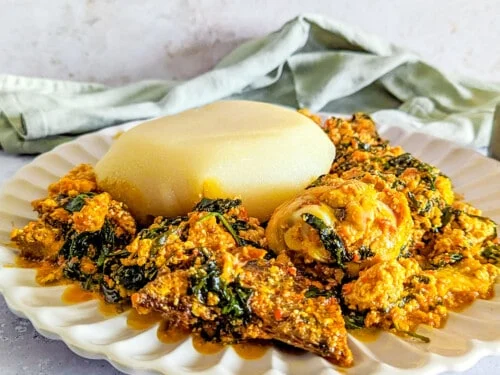

Egusi Soup
Egusi soup is a rich West African classic made with melon seeds, ugwu leaves, and your choice of meat or fish, slow-cooked in a deeply flavoured palm oil base.
Bold, satisfying, and built for sharing — this is comfort food at its most authentic.
Recipe Details
To prepare egusi soup, start by visiting the market to purchase the ingredients listed below. This should take about 1 to 2 hours. Cooking the soup itself typically takes 30 to 45 minutes. It can be served with eba, fufu, semo, or pounded yam, and can even be enjoyed with white rice—that’s how versatile egusi soup is.
Ingredients
- Palm Oil
- Melon Seeds
- Onions
- Meat/Fish
- Maggi
- Salt
- Ugwu Leaf
- Pepper
Instructions
- Pour the red oil into a pot and allow it heat for at least 2 mins.
- Add your onions.
- Add your blended melon seeds.
- Add your pepper.
- Add water and stir.
- Add your fish/meat and salt to taste.
- Cover the pot and allow to cook together for about 5 mins.
- Add your ugwu leaves.
- Allow everything cook together for about 7 mins and the soup is ready.